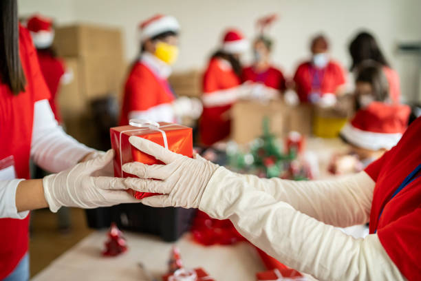
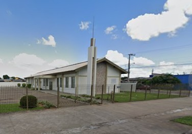

Welcome to our Christmas community and the heart of our Christmas 2 All!
We are a passionate group of individuals who believe that Christmas is the perfect time to celebrate the spirit of solidarity, compassion, and unity.
Our Mission:
Our purpose is simple yet powerful: to make Christmas brighter and more meaningful for everyone in our community. We believe that the true meaning of Christmas lies in giving, sharing, and taking care of each other.
What We Do:
Promote Solidarity: We organize solidarity initiatives that help needy families have a warmer Christmas. This includes collecting food, toys, and clothes, as well as offering emotional support and practical assistance.
Celebrate as a Community: We bring the community together to celebrate Christmas with festive events, parades, fairs, and meetings with Santa Claus. We believe that sharing the Christmas joy is essential.
Inspire Generosity: We promote a culture of giving and generosity. We believe that, together, we can make a difference in the lives of many during Christmas.
How You Can Get Involved:
We are always on the lookout for generous souls who wish to join us on this Christmas solidarity journey. You can contribute by donating food, clothes, toys, or your time as a volunteer. Every small gesture makes a difference.
Together, we make Christmas a brighter time for everyone. Come join us in celebrating solidarity, compassion, and love this Christmas season.
Thank you for being a part of this amazing Christmas journey with us.
Spreading the Christmas Love, The Christmas 2 All Team

